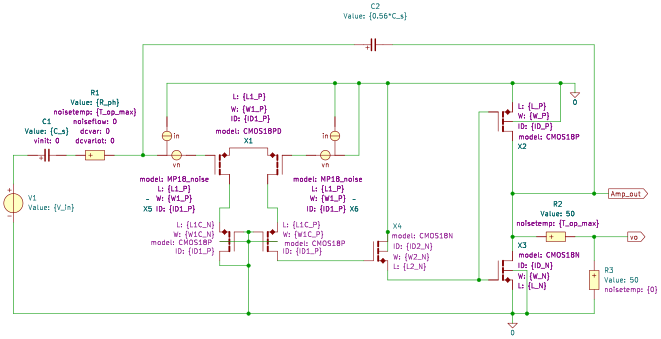
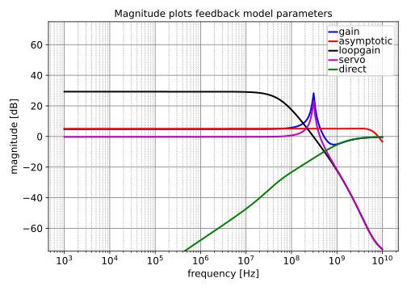
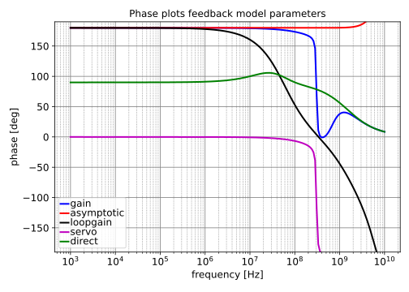
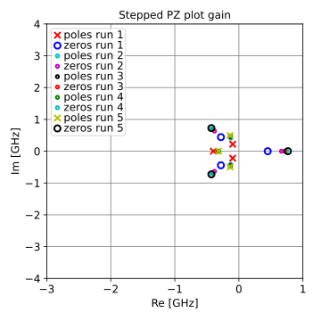
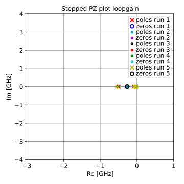
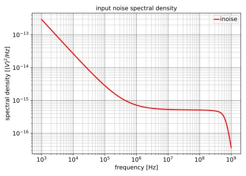

DC value = $-29.17$
| pole | Re [Hz] | Im [Hz] | Mag [Hz] | Q |
|---|---|---|---|---|
| p1 | $-54.63\cdot 10^{6}$ | $17.46\cdot 10^{6}$ | $57.35\cdot 10^{6}$ | $0.5249$ |
| p2 | $-54.63\cdot 10^{6}$ | $-17.46\cdot 10^{6}$ | $57.35\cdot 10^{6}$ | $0.5249$ |
| p3 | $-1.504\cdot 10^{9}$ | $1.504\cdot 10^{9}$ | ||
| p4 | $-3.680\cdot 10^{9}$ | $3.680\cdot 10^{9}$ | ||
| p5 | $-5.549\cdot 10^{9}$ | $5.549\cdot 10^{9}$ |
| zero | Re [Hz] | Im [Hz] | Mag [Hz] | Q |
|---|---|---|---|---|
| z1 | $3.685\cdot 10^{9}$ | $5.190\cdot 10^{9}$ | $6.365\cdot 10^{9}$ | $0.8636$ |
| z2 | $3.685\cdot 10^{9}$ | $-5.190\cdot 10^{9}$ | $6.365\cdot 10^{9}$ | $0.8636$ |
| z3 | $-4.263\cdot 10^{9}$ | $4.263\cdot 10^{9}$ | ||
| z4 | $-9.615\cdot 10^{9}$ | $9.615\cdot 10^{9}$ |
DC value = $0.9669$
| pole | Re [Hz] | Im [Hz] | Mag [Hz] | Q |
|---|---|---|---|---|
| p1 | $-10.00\cdot 10^{6}$ | $304.9\cdot 10^{6}$ | $305.1\cdot 10^{6}$ | $15.25$ |
| p2 | $-10.00\cdot 10^{6}$ | $-304.9\cdot 10^{6}$ | $305.1\cdot 10^{6}$ | $15.25$ |
| p3 | $-1.609\cdot 10^{9}$ | $1.609\cdot 10^{9}$ | ||
| p4 | $-3.670\cdot 10^{9}$ | $3.670\cdot 10^{9}$ | ||
| p5 | $-5.544\cdot 10^{9}$ | $5.544\cdot 10^{9}$ |
| zero | Re [Hz] | Im [Hz] | Mag [Hz] | Q |
|---|---|---|---|---|
| z1 | $3.685\cdot 10^{9}$ | $5.190\cdot 10^{9}$ | $6.365\cdot 10^{9}$ | $0.8636$ |
| z2 | $3.685\cdot 10^{9}$ | $-5.190\cdot 10^{9}$ | $6.365\cdot 10^{9}$ | $0.8636$ |
| z3 | $-4.263\cdot 10^{9}$ | $4.263\cdot 10^{9}$ | ||
| z4 | $-9.615\cdot 10^{9}$ | $9.615\cdot 10^{9}$ |
DC value = $undefined$
| pole | Re [Hz] | Im [Hz] | Mag [Hz] | Q |
|---|---|---|---|---|
| p1 | $-10.00\cdot 10^{6}$ | $304.9\cdot 10^{6}$ | $305.1\cdot 10^{6}$ | $15.25$ |
| p2 | $-10.00\cdot 10^{6}$ | $-304.9\cdot 10^{6}$ | $305.1\cdot 10^{6}$ | $15.25$ |
| p3 | $-1.609\cdot 10^{9}$ | $1.609\cdot 10^{9}$ | ||
| p4 | $-3.670\cdot 10^{9}$ | $3.670\cdot 10^{9}$ | ||
| p5 | $-5.544\cdot 10^{9}$ | $5.544\cdot 10^{9}$ |
| zero | Re [Hz] | Im [Hz] | Mag [Hz] | Q |
|---|---|---|---|---|
| z1 | $574.0\cdot 10^{6}$ | $574.0\cdot 10^{6}$ | ||
| z2 | $-333.3\cdot 10^{6}$ | $593.1\cdot 10^{6}$ | $680.3\cdot 10^{6}$ | $1.02$ |
| z3 | $-333.3\cdot 10^{6}$ | $-593.1\cdot 10^{6}$ | $680.3\cdot 10^{6}$ | $1.02$ |
| z4 | $-3.702\cdot 10^{9}$ | $3.702\cdot 10^{9}$ | ||
| z5 | $-5.547\cdot 10^{9}$ | $5.547\cdot 10^{9}$ |



Go to Active_E_Field_Probe_index
SLiCAP: Symbolic Linear Circuit Analysis Program, Version 4.0.10 © 2009-2025 SLiCAP development team
For documentation, examples, support, updates and courses please visit: analog-electronics.tudelft.nl
Last project update: 2026-03-18 18:52:54